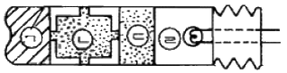
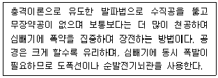
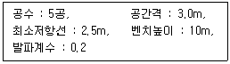
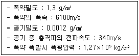
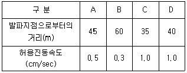
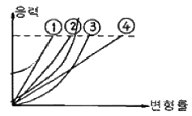
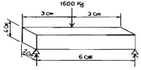
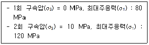

화약류관리산업기사 (2012-09-15 기출문제)
1과목: 일반화약학
1. 전기뇌관 10개를 직렬로 연결하고 발파모선 총 100m를 사용하여 발파하고자 한다. 이 때 소요전압은 몇 V 인가? (단, 전기뇌관 1개의 저항은 1.4Ω, 발파모선의 1m당 저항은 0.02Ω, 발파기의 내부저항은 0이고, 전류는 2A로 한다.)
- 16
- 26
- 32
- 44
(정답률: 알수없음)

2. 도화선의 심약은 무엇을 사용하는가?
- PETN
- 흑색화약
- DDNP
- 뇌홍
(정답률: 알수없음)
3. TNT 1g 당 산소평형값에 가장 가까운 값은?
- +0.035
- -0.101
- -0.474
- -0.740
(정답률: 알수없음)
4. 화약류가 폭발 후 생성되는 가스로 가장 거리가 먼 것은?
- 탄산가스
- 수증기
- 이산화질소
- 메탄가스
(정답률: 알수없음)
5. 전기뇌관에 대한 설명으로 옳지 못한 것은?
- 0.01A의 전류를 통하면 발화해야 한다.
- 관체의 재질은 구리, 철 또는 알루미늄으로 한다.
- LP 전기뇌관은 초시차가 원칙적으로 100ms 이상의 것이다.
- MS 전기뇌관은 초시차가 원칙적으로 100ms 미만의 것이다.
(정답률: 알수없음)
6. 질산에스테르류의 화약류를 제조할 때 주로 사용하는 혼산은?
- HCOOH - HCl
- HNO3 - H2SO4
- HNO3 - H2CO3
- HNO3 - HCN
(정답률: 알수없음)
7. 흑색화약의 2미혼화 조성으로 맞는 것은?
- 질산칼륨, 황
- 질산칼륨, 목탄
- 목탄, 황
- 질산칼륨, 흑연
(정답률: 알수없음)
8. 니트로글리세린의 분자식에 해당하는 것은?
- C3H5(OH)3
- C3H5(NO3)3
- C2H4(OH)2
- C2H4(NO3)2
(정답률: 알수없음)
9. 콤포지션 A, B, C에 공통적으로 들어가는 화약은?
- 헥소겐
- 펜트리트
- 피크린산
- 테트릴
(정답률: 알수없음)
10. 화약류를 제조할 때 감열소염제로 사용하는 것은?
- KNO3, C
- NH4NO3, NaNO3
- NaCl, 붕사
- TNT, DDNP
(정답률: 알수없음)
11. KS에서 규정한 화약류의 분석시험방법 중에서 니트로글리세린, 질산염, 소금 성분을 분석하는 것은?
- 과염소산염 폭약
- 질산암모늄 폭약
- 분상 다이너마이트
- 교질 다이너마이트
(정답률: 알수없음)
12. 그림은 전기뇌관의 약도이다. 각 부위를 옳게 나타낸 것은?

- ㉠ 첨장약, ㉡ 연시장치(연시약), ㉢ 기폭약, ㉣ 점화장치(점화약)
- ㉠ 기폭약, ㉡ 연시장치(연시약), ㉢ 점화장치(점화약), ㉣ 첨장약
- ㉠ 첨장약, ㉡ 기폭약, ㉢ 연시장치(연시약), ㉣ 점화장치(점화약)
- ㉠ 기폭약, ㉡ 첨장약, ㉢ 점화장치(점화약), ㉣ 연시장치(연시약)
(정답률: 알수없음)
13. 옥틀(Octol)의 조성화약으로 옳은 것은?
- RDX + TNT
- HMX + TNT
- RDX + PETN
- TNT + PETN
(정답률: 알수없음)
14. 다음 화약류 중에서 자연발화 또는 자연폭발을 일으키는 경향이 있는 것으로만 이루어진 것은?
- 공업뇌관, ANFO
- 흑색화약, 공업뇌관
- 초안폭약, ANFO
- 무연화약, 면약
(정답률: 알수없음)
15. ANFO 폭약의 원료로서 적합한 연료유는?
- 아세톤
- 경유
- 등유
- 휘발유
(정답률: 알수없음)
16. 다음 중 화약류가 아닌 것은?
- 뇌홍
- 아지화납
- 니트로 녹말
- 질산칼륨
(정답률: 알수없음)
17. ANFO 폭약의 원료로서 가장 적합한 질산암모늄의 형태는?
- 저비중 덩어리
- 저비중 다공질 알갱이 모양
- 고밀도 덩어리
- 고밀도 다공질 알갱이 모양
(정답률: 알수없음)
18. 낙추시험에서 한계폭점을 가장 옳게 나타낸 것은?
- 폭발을 한번도 일으키지 않는 최대의 낙고도
- 폭발을 일으키는데 필요한 평균의 낙고도
- 시료의 전부가 폭발을 일으키는 최소의 낙고도
- 연속 6회의 추를 떨어뜨려 1회만 폭발하는 낙고도
(정답률: 알수없음)
19. 어떤 화약의 순폭거리가 200mm 이었고, 약포의 지름은 40mm 이었다면, 화약의 순폭도는 얼마인가?
- 5
- 10
- 25
- 30
(정답률: 알수없음)
20. 화약류를 성능에 의한 분류 중 폭약이 아닌 것은?
- 흑색화약
- 뇌홍
- PETN
- RDX
(정답률: 알수없음)
2과목: 발파공학
21. 전폭약포의 장전위치에 따라 정기폭, 중간기폭, 역기폭으로 나눌 수 있다. 역기폭에 대한 설명으로 옳지 않은 것은?
- 전폭약포를 공저에 넣는 방법이다.
- 폭발위력이 내부에 더욱 크게 작용하여 잔류공을 남기는 일이 없다.
- 장전시 전폭약포의 뇌관이 공저에 충돌할 위험이 있어 다져 넣는데 주의해야 한다.
- 충격파가 자유면에 도달하는 시간이 정기폭보다 빠르며 순폭성이 정기폭보다 우수하다.
(정답률: 알수없음)
22. 다음 중 수중발파를 장약방법으로 분류할 때 해당하지 않는 것은?
- 수중현수발파
- 수중부착발파
- 수중천공발파
- 수중부유발파
(정답률: 알수없음)
23. 다음 중 비전기식 뇌관에 대한 설명으로 옳지 않은 것은?
- 미주전류, 정전기, 전파 등에 대하여 안전하다.
- 결선이 단순, 용이하여 작업능률이 높다.
- 뇌관 내부에 연시장치가 없어 뇌관의 튜브길이에 의존하여 지발시간을 조절한다.
- 결선상태를 도통시험기나 저항시험기로 확인할 수 없다.
(정답률: 알수없음)
24. 발파효과에 영향을 미치는 요소 중 조저 가능한 변수가 아닌 것은?
- 폭약의 종류
- 암반의 강도
- 천공간격
- 지발시차
(정답률: 알수없음)
25. 다음 중 발파 폭풍압의 감소대책으로 옳지 않은 것은?
- 완전전색을 실시한다.
- 천공지름을 작게 하는 등의 방법으로 지발당 장약량을 감소시킨다.
- 기폭방법에서 정기폭을 사용한다.
- 방음벽을 설치하여 소리의 전파를 차단한다.
(정답률: 알수없음)
26. 복합형상으로 이뤄진 건물을 순간적으로 붕괴시키는 공법으로 3차원적 기폭시스템이 설계되어 시차를 두고 여러곳에서 붕괴가 진행되는 발파해체공법은?
- 단축붕괴공법(Telescoping)
- 내파공법(Implosion)
- 점진붕괴공법(Progressive Collapse)
- 연석붕괴공법(Sequenced Racking)
(정답률: 알수없음)
27. 다음에서 설명하는 심빼기 발파법은?

- 대구경 심빼기(Cylinder cut)
- 코로만트 컷(Coromant cut)
- 집중식 노 컷(No cut round)
- 스피랄 컷(Spiral cut)
(정답률: 알수없음)
28. 음압레벨(SPL, Sound Pressure Level)은 최소 가청음압과 대상음의 압력으로 표시할 수 있다. 다음 중 음압레벨의 관계식으로 옳은 것은? (단, P : 대상음의 압력, Po : 최소 가청음압)
- SPL = 20 log10(Po/P)
- SPL = 20 log10(P/Po)
- SPL = 10 log10(Po/P)
- SPL = 10 log10(P/Po)
(정답률: 알수없음)
29. 발파작업에 관한 다음의 설명 중 옳은 것은?
- 지하수가 많은 터널에서는 초유폭약을 사용하는 것이 적합하다.
- 전색재료는 발파공벽과의 마찰이 커서, 발파에 의한 발생가스의 압력을 이겨낼 수 있는 것으로 한다.
- 전기뇌관의 병렬식 연결은 결선이 틀리지 않고 불발시 조사하기가 쉽다.
- 발파가 완료된 즉시 잔류폭약의 유무를 조사하여야 한다.
(정답률: 알수없음)
30. 터널발파에서 평행공 심빼기(Parallel Cut)의 특징으로 옳지 않은 것은?
- 천공기술에 숙련을 필요로 한다.
- 파쇄석의 비산거리가 비교적 적고, 막장 부근에 집중되므로 파쇄석 처리가 용이하다.
- 천공이 근접되므로, 폭약이 유폭되거나 사압현상으로 잔류약이 발생될 수 있다.
- 불발 및 Cut-off 등이 발생하지 않는 심빼기 방법이다.
(정답률: 알수없음)
31. 다음 중 누두공 이론에 대한 설명을 옳지 않은 것은?
- 폭약의 위력이나 암석발파에 대한 저상성을 알고 약량산정을 위한 자료를 얻을 목적으로 실시한다.
- 실제 현장조건과 동일하게 불균질하고 이방성이 심한 암반을 선택해서 폭약을 장전하고 발파하여, 그 결과 생기는 누두공을 관측하는 시험이다.
- 누구공의 모양과 크기는 암반의 종류와 폭약의 위력 및 메지의 정도에 따라서 달라진다.
- 누구공의 반경 R과 최소저항선 W의 비를 누두지수라 한다.
(정답률: 알수없음)
32. 계단식 발파에서 열과 열 사이의 지연시간에 따른 발파결과로 옳지 않은 것은?
- 짧은 지연시간은 여굴을 감소시킨다.
- 짧은 지연시간은 자유면에 대해 더 큰 암괴를 발생시킨다.
- 짧은 지연시간은 비산에 대한 더 많은 잠재력을 가진다.
- 짧은 지연시간은 더 많은 폭력, 폭풍, 지반진동을 야기한다.
(정답률: 알수없음)
33. 다음의 발파조건으로 2자유면 벤치발파를 실시하고자 한다. 비장약량(specific charge)은 얼마인가?

- 1.0 kg/m3
- 0.5 kg/m3
- 0.3 kg/m3
- 0.2 kg/m3
(정답률: 알수없음)
34. 발파진동 측정방법 중 진동픽업의 설치 방법으로 옳지 않은 것은?
- 진동픽업의 설치장소는 옥내지표를 원칙으로 하고 복잡한 반사, 회절현상이 예상되는 지점은 피한다.
- 진동픽업의 설치장소는 완충물이 없고, 충분히 다져서 단단히 굳은 장소로 한다.
- 진동픽업은 수직방향 진동레벨을 측정할 수 있도록 설치한다.
- 진동픽업의 설치장소는 경사 또는 요철이 없는 장소로 하고, 수평면을 충분히 확보할 수 있는 장소로 한다.
(정답률: 알수없음)
35. 폭약위력계수가 1인 폭약 2kg으로 표준발파가 이루어졌다. 폭약위력계수가 1.37인 폭약을 이용하여 발파시 표준발파가 되기 위한 장약량은? (단, 기타 조건은 동일하다고 가정)
- 1.46kg
- 2.0kg
- 2.74kg
- 3.0kg
(정답률: 알수없음)
36. 다음 중 공발의 일반적인 원인으로 옳지 않은 것은?
- 자유면에 수직 천공할 때
- 전색이 불충분 할 때
- 암반에 많은 균열층이 있을 때
- 천공간격이 너무 협소할 때
(정답률: 알수없음)
37. 암반의 손상 방지를 위한 장약방법이 디커플링 장약(decoupling charge)법이다. 다음과 같은 조건에서 디커플링된 폭약의 폭굉시 폭약과 공기와의 경계면에서 발생하는 최고압력은 얼마인가?

- 13.07 kg/cm2
- 15.18 kg/cm2
- 17.37 kg/cm2
- 19.28 kg/cm2
(정답률: 알수없음)
38. 다음 중 기술적인 측면에서 분류한 비산의 형태에 해당하지 않는 것은?
- 장약공의 장약폭발에 의한 비산
- 암반의 강도 저하에 의한 비산
- 뇌관류의 기폭순서 배치불량에 의한 비산
- 가스압력에 의한 공구에서의 비산
(정답률: 알수없음)
39. 시험발파에서 V(cm/sec)=160(SD)-1.6의 발파진동식을 얻었으며 제곱근 환선거리를 이용하였다. 이때 보안물건이 다음과 같이 있을 경우 지발당 최대 허용장약량 계산의 기준이 되는 보안물건은?

- A 보안물건
- B 보안물건
- C 보안물건
- D 보안물건
(정답률: 알수없음)
40. 다음 중 경사천공의 장점으로 옳지 않은 것은?
- 자유면 반대방향의 후면 파괴 감소
- 정확한 경사각 유지 용이
- 1자유면에서 문제성 감소
- 양호한 파쇄율(낮은 계단 발파)
(정답률: 알수없음)
3과목: 암석역학
41. 암석의 물리적, 역학적 성질이 암석내의 방향에 따라서 달라지는 성질을 무엇이라고 하는가?
- 불균질성
- 등방성
- 이방성
- 비선형성
(정답률: 알수없음)
42. 시추공 내에 변형계측기를 설치한 후 시추공 주변을 오버코어링하여 발생한 암반변형으로부터 초기응력을 유추하는 방법은?
- 응력해방법
- 수압파쇄법
- 응력보상법
- AE 시험법
(정답률: 알수없음)
43. 다음 그림에서 취성도가 가장 큰 암석은?

- ①
- ②
- ③
- ④
(정답률: 알수없음)
44. 물체에 가해지는 응력이 항복응력보다 작은 경우에는 변형이 발생하지 않고, 가해지는 응력이 항복응력에 도달하게 되면 무한한 변형이 발생하는 현상을 모사하는 역학적 모형은?
- 스프링 모형
- 슬라이더 모형
- 대쉬포트 모형
- 맥스웰 모형
(정답률: 알수없음)
45. 가로 2cm, 세로 4cm, 길이 6cm인 각주형 화강암 시편의 중심에 1600kg의 하중이 작용할 때 시편이 파괴되었다. 이 시편의 파단강도는 얼마인가?

- 160 kg/cm2
- 280 kg/cm2
- 450 kg/cm2
- 530 kg/cm2
(정답률: 알수없음)
46. 주응력 σ1=100kg/cm2, σ2=50kg/cm2, σ3=20kg/cm2 이고, E=104kg/cm2, ν=0.25 일 때 전단변형률에너지는?
- 0.2kg/cm2
- 0.4kg/cm2
- 0.6kg/cm2
- 0.8kg/cm2
(정답률: 알수없음)
47. 지반침하를 형태에 따라 분류할 때 불연속형 침하에 해당하지 않는 것은?
- 왕관형 침하
- 굴뚝형 침하
- 돌리네형 침하
- 골형 침하
(정답률: 알수없음)
48. 암반분류법인 RMR 분류법의 변수 중 Q 분류법에서는 고려하지 않고 있는 것은?
- 암석의 일축압축강도
- 암질지수
- 지하수 상태
- 불연속면 상태
(정답률: 알수없음)
49. 암석파괴이론인 Hoek-Brown 파괴기준에 대한 설명으로 옳지 않은 것은?
- 파괴기준에 중간주응력의 영향을 고려한 이론이다.
- 균질하고 등방성을 나타내는 암반을 대상으로 개발되었다.
- 절리가 심하게 불규칙적으로 발달한 암반의 경우에도 적용이 가능하다.
- 편리나 층리가 발달된 암반에서 연약면에 의해 암반의 거동이 좌우되는 경우는 적용할 수 없다.
(정답률: 알수없음)
50. 어떤 암반의 RMR 값이 80일 때 변형계수는 얼마인가? (단, Bieniawski(1978)의 제안식을 사용)
- 40 MPa
- 40 GPa
- 60 MPa
- 60 GPa
(정답률: 알수없음)
51. 암반분류법인 Q분류법의 계산 항목 중 (RQD/Jn) 항의 최대값은 최소값의 몇 배인가?
- 100배
- 200배
- 300배
- 400배
(정답률: 알수없음)
52. 암석의 일축압축시험 결과에 영향을 미치는 요인으로 옳지 않은 것은?
- 가압판과 시험편과의 마찰
- 시험편의 크기
- 시험편의 구속압 크기
- 시험편의 건조 정도
(정답률: 알수없음)
53. σ-τ 좌표계에 Mohr 응력원을 작도할 때 응력원의 중심을 옳게 나타낸 것은?
- [σx + σy, 0]
- [σx - σy, 0]
- [(σx + σy)/2, 0]
- [(σx - σy)/2, 0]
(정답률: 알수없음)
54. 다음 중 고전적 탄성이론에서 가정하는 탄성체의 성질에 대한 설명으로 옳지 않은 것은?
- 물체에 응력이 작용하면 응력방향의 변형률은 작용응력에 반비례한다.
- 물체의 재질은 전 물체를 통하여 균질하게 분포·배열되어 있으며, 재질의 탄성적 성질은 물체 내 모든 점에서 똑같다.
- 재질의 탄성적 성질은 모든 방향에서 똑같다.
- 변형을 일으키는 힘을 제거하면 물체의 크기와 모양은 완전히 원형의 상태로 돌아간다.
(정답률: 알수없음)
55. 암반 절리의 전단강도를 나타내는 Barton의 제안식을 사용하기 위하여 필요한 입력자료가 아닌 것은?
- 절리면의 거칠기 계수
- 절리면의 압축강도
- 절리면의 잔류 마찰각
- 절리면의 지하수 상태
(정답률: 알수없음)
56. 인장시험법의 종류에 따른 인장강도 크기의 일반적인 순서로 맞는 것은?
- 휨시험 ＞ 압열의장시험 ＞ 직접인장시험
- 직접인장시험 ＞ 압열인장시험 ＞ 휨시험
- 직접인장시험 ＞ 휨시험 ＞ 압열인장시험
- 압엽인장시험 ＞ 휨시험 ＞ 직접인장시험
(정답률: 알수없음)
57. 암반사면의 파괴형태 중 탁원할 불연속면의 경사방향이 사면의 경사방향과 거의 일치하며 사면의 경사가 불연속면의 경사보다 급한 경우 발생하는 것은?
- 원호파괴
- 평면파괴
- 쐐기파괴
- 전도파괴
(정답률: 알수없음)
58. 어느 암석에 대하여 2회의 삼축압축시험을 수행하여 다음과 같은 결과를 얻었다. 파괴포락선을 직선으로 가정한 Mohr-Coulomb파괴조건식을 고려하였을 때 내부마찰각은?

- 30°
- 37°
- 45°
- 50°
(정답률: 알수없음)
59. 터널 등 암반 구조물에 대한 수치 해석법 중 지반을 불연속체로 가정하여 해석을 수행하는 방법은?
- 유한요소법
- 경계요소법
- 유한차분법
- 개별요소법
(정답률: 알수없음)
60. 다음 중 가장 변성도가 낮은 변성암은?
- 천매암
- 편암
- 점판암
- 편마암
(정답률: 알수없음)
4과목: 화약류 안전관리 관계 법규
61. 화약류저장소에서의 저장방법 및 취급방법으로 틀린 것은? (단, 수중저장소에서의 저장은 제외한다.)
- 저장소 안에서 휴대용 전등을 사용하였다.
- 저장소의 내부 환기에 유의하고 여름과 겨울철의 계절적 영향과 온도의 변화를 최소한도로 하였다.
- 저장소 내부에 무연화약 또는 다이나마이트를 저장하였을 때 온도계를 비치하였다.
- 저장된 화약류 중 안전을 위하여 저장기간이 짧은 것부터 출고하였다.
(정답률: 알수없음)
62. 꽃불류저장소 주위의 방폭벽에 대한 설명으로 틀린 것은?
- 방폭벽은 꽃불류저장소의 바깥벽과의 거리가 2m 이상이 되도록 할 것
- 방폭벽은 두께 15cm 이상의 보강콘크리트블록조로 할 것
- 방폭벽은 꽃불류저장소의 처마높이(일광건조장에 있어서는 2.5m) 이상으로 할 것
- 방폭벽의 출입구에는 그 바깥쪽에 다시 방폭벽을 설치할 것
(정답률: 알수없음)
63. 다음 중 제3종 보안물건에 해당하지 않는 것은?
- 선박의 계류소
- 고압전선
- 석유저장시설
- 발전소
(정답률: 알수없음)
64. 화약류와 관련한 장부의 비치 등에 대한 설명으로 옳은 것은?
- 화약류 판매업자는 화약류 출납부를 비치하여야 한다.
- 화약류 제조업자는 화약류 제조 명세부 및 원료화약류 수지명세부를 비치하여야 한다.
- 화약류 사용자는 화약류 양도·양수명세부를 비치하여야 한다.
- 장부는 기입을 완료한 날로부터 3년간 각각 보존해야 한다.
(정답률: 알수없음)
65. 폭약 20톤을 저장할 수 있는 화약류 저장소를 설치하고자 하는 경우 제3종 보안물건과의 보안거리는 220m 이다. 저장소와 경비실, 저장소와 부속시설과의 법적 보안거리는?
- 경비실 : 27.5m, 저장소부속시설 : 110m
- 경비실 : 55m, 저장소부속시설 : 110m
- 경비실 : 110m, 저장소부속시설 : 55m
- 경비실 : 110m, 저장소부속시설 : 27.5m
(정답률: 알수없음)
66. 쏘아 올리는 꽃불류를 발사통 안에 넣을 때 가장 올바른 방법은?
- 손으로 밀어 넣는다.
- 끈을 사용하여 서서히 내려 넣는다.
- 물을 섞어서 흘려 넣는다.
- 다짐봉에 걸어서 넣는다.
(정답률: 알수없음)
67. 화약류를 도난·분실하였을 때 국가경찰관서에 신고하지 아니한 경우의 벌칙은?
- 5년 이하의 징역 또는 1천만원 이하의 벌금형
- 3년 이하의 징역 또는 700만원 이하의 벌금형
- 2년 이하의 징역 또는 500만원 이하의 벌금형
- 300만원 이하의 과태료
(정답률: 알수없음)
68. 화약류의 취급방법에 대한 설명으로 옳지 않은 것은?
- 화약, 폭약과 화공품은 각각 다른 용기에 넣어 취급한다.
- 얼어서 굳어진 다이나마이트는 50℃ 이하의 온도가 유지되는 실내에서 누그러뜨린다.
- 굳어진 다이나마이트는 손으로 주물러서 부드럽게 한다.
- 전기뇌관의 도통시험 또는 저항시험 시 시험전류는 0.01A를 초과해서는 안된다.
(정답률: 알수없음)
69. 화약류관리보안책임자 면허증에 대한 설명으로 옳지 않은 것은?
- 화약류관리보안책임자 면허소지자가 주민등록상의 주소의 변경이 있을 시에는 즉시 관할 경찰서에 신고해야 한다.
- 면허증을 분실하였을 때에는 면허관청에 신고하여 다시 교부받을 수 있다.
- 면허정지 또는 취소처분을 받은 때에는 면허증을 지체없이 면허관청에 반납해야 한다.
- 면허증을 분실했을 경우에는 면허관청에 재교부신청서와 함께 잃어버리게 된 경위서를 첨부하여 제출해야 한다.
(정답률: 알수없음)
70. 폭약과 비슷한 파괴적 폭발에 사용될 수 있는 것으로서 대통령령이 정하는 것에 해당하지 않는 것은?
- 폭발의 용도에 사용되는 질산요소 또는 이를 주성분으로 한 폭약
- 디아조디니트로페놀 또는 무수규산 65% 이상을 함유한 폭약
- 초유폭약
- 면약(질소함량이 12.2% 이상의 것에 한한다)
(정답률: 알수없음)
71. 화약류를 수입한 사람은 지체없이 행정안전부령이 정하는 바에 의하여 누구에게 신고하여야 하는가?
- 경찰청장
- 수입지 관할 지방경찰청장
- 수입지 관할 경찰서장
- 행정안전부장관
(정답률: 알수없음)
72. 전기발파의 기술상의 기준에 대한 설명으로 맞는 것은?
- 발파모선은 고무 등으로 절연된 전선 20m 이상의 것을 사용하되, 사용 전에 그 선이 끊어졌는지 여부를 검사한다.
- 공기장전기를 사용하여 화약 또는 폭약을 장전하는 때에는 전기뇌관을 반드시 천공된 구멍 입구에 두도록 한다.
- 화약류를 장전한 장소로부터 20m 이상 떨어진 안전한 장소에서 도통시험을 한다.
- 동력선 또는 전등선을 전원으로 사용할 때는 전선에는 10A 이상의 적당한 전류가 흐르게 한다.
(정답률: 알수없음)
73. 다음 중 화약류취급소에 대한 설명으로 옳지 않은 것은?
- 화약류를 사용하는 사람은 화약류를 사용하는 장소 부근에 화약류의 관리 및 발파의 준비를 위한 화약류취급소를 반드시 설치해야 한다.
- 화약류취급소 출입문 외면은 두께 2mm 이상의 철판을 씌우고, 2중 자물쇠장치를 해야 한다.
- 화약류취급소의 정제량은 1일 사용예정량 이하로 하되, 화약 또는 폭약(초유폭약 제외)은 300kg를 초과해서는 아니된다.
- 화약류취급소에는 장부를 비치하고 화약류의 수불 및 사용하고 남은 양을 명확히 기록해야 한다.
(정답률: 알수없음)
74. 사용허가를 받지 아니하고 신호 또는 관상용으로 1일 동일한 장소에서 사용할 수 있는 꽃불류의 수량으로 옳지 않은 것은?
- 직경 6cm 미만의 둥근모양의 쏘아 올리는 꽃불류 50개 이하
- 직경 6cm 이상 10cm 미만의 둥근모양의 쏘아 올리는 꽃불류 15개 이하
- 직경 10cm 이상 20cm 미만의 둥근모양의 쏘아 올리는 꽃불류 10개 이하
- 200개 이하의 염관을 사용한 쏘아 올리는 꽃불류 2개
(정답률: 알수없음)
75. 화약류를 저장소에서 사용장소로 운반하고자 할 때 누구에게 신고를 하여야 하는가? (단, 대통령령이 정하는 수량 이하의 화약류를 운반하는 경우 제외)
- 사용지 관할 경찰서장
- 발송지 관할 경찰서장
- 주소지 관할 경찰서장
- 도착치 관할 지방경찰청장
(정답률: 알수없음)
76. 지하 1급저장소의 지반의 두께가 15m 일 경우 저장할 수 있는 폭약량으로 맞는 것은? (단, 법령상 최대 기준수량임)
- 5톤 이하
- 7톤 이하
- 9톤 이하
- 11톤 이하
(정답률: 알수없음)
77. 다음 중 화약류저장소에 따른 미진동파쇄기의 최대저장량으로 옳지 않은 것은?
- 1급저장소 – 200만개
- 2급저장소 – 100만개
- 3급저장소 – 1만개
- 간이저장소 – 300개
(정답률: 알수없음)
78. 광업법에 의하여 광물의 채굴을 하는 사람이 채굴을 목적으로 허가없이 양수할 수 있는 폭약의 수량은?
- 1125 g 이하
- 1225 g 이하
- 1325 g 이하
- 1425 g 이하
(정답률: 알수없음)
79. 1급 화약류관리보안책임자 1인이 몇 동의 화약류저장소를 관리할 수 있는가? (단, 연중 40톤 이상의 폭약을 저장하는 저장소)
- 1개동
- 2개동
- 3개동
- 4개동
(정답률: 알수없음)
80. 다음 중 동일차량에 함께 실을 수 있는 화약류로 적합한 것은?
- 폭약, 신관(포경용 제외), 도폭선, 실탄·공포탄
- 화약, 포경용 신관, 특별용기에 들어있는 전기뇌관, 실탄·공포탄
- 폭약, 포경용 신관, 특별용기에 들어있는 전기뇌관, 꽃불류
- 화약, 신관(포경용 제외), 도폭선, 실탄·공폭탄
(정답률: 알수없음)